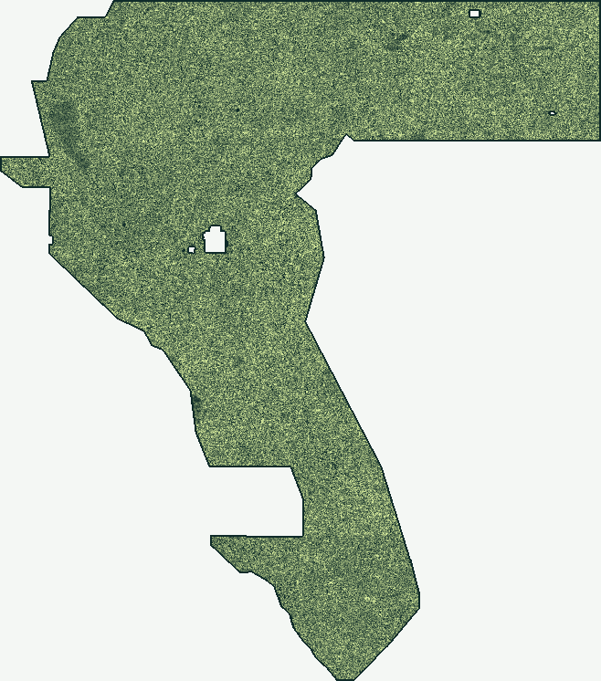

Lane H77D (Archived Research Candidate — Not Approved to Submit): Zero-SGMC Coupled Tectono-Hydrothermal Conduits + 300 m Submodular Cover
Inspection download only — do not upload to DrivenData. (37,654 binary dots in {0.0, 1.0}, 0 NaN inside footprint, 0 SGMC channels, 0 pixels copied from any prior submission). Recorded local spatial holdout: HOLDOUT-DTI = 0.15011 (Seed 30, +0.04198 vs prior best A5; +0.05296 vs fold-fair H33 champion) and 0.14030 (Seed 20, +0.03100 vs A5; +0.04455 vs H33). Informative subset audit across 865 prior rasters (Phase 1 surface max |ρ| = 0.4103 ≤ 0.90; Phase 2 dot max |ρ| = 0.0654 ≤ 0.90; max sparse 3-px forward overlap = 0.6883 ≤ 0.70), but the binding literal registry-uniqueness rule fails on the 100%-coverage dense witness (template_literal_reading_duplicate: true).
gems77-h77d-hydrotect-submod-37654dots-20261021-0176be7f-zeros.tif)Fail-Closed Release Gate (submission-authorization.json): NOT OK TO SUBMIT. While the frozen historical run card (evidence/run_card_h77d.json) retains its original scientific verdict: "promote" field alongside policy_i17_literal_verdict: "negative" for audit provenance, the operative repository verdict is negative and Selector status: Not approved · Full PhD Technical Report · Step-by-Step Submission Guide.
| Lane | File | Verdict | Upload status |
|---|---|---|---|
| H77L: 300 m lagged ThK / LiDAR scarp (RESEARCH ONLY) | gems77-h77l-thk-flank-6b24305363fa-RESEARCH-ONLY.tif | negative | Not OK to submit. OK to download for inspection only. Literal registry overlap = 1.0 against a full-support witness; no final dots or weekly slot. Format-valid research TIFF, NOT competition-approved. |
| H79-BB: basement potential-field step × topographic curvature ridge (research TIFF; literal FAIL) | gems77-h79-crossgrad-ridge-37654dots-20261021-dd0dbf9c-zeros.tif | negative | Not OK to submit. OK to download for inspection only. Literal dense-witness uniqueness fails; H79 0.032328 HOLDOUT-DTI (gems57-pooled-hide-v2, 22,633 withheld positives, 95% CI 0.028377–0.036450) is below its same-support random control; selector not approved. |
| H79-RH: lagged radiometric U-halo pairing (parallel negative) | gems77-h79-radhalo-lag3-37654-20261021-zeros.tif | negative | Not OK to submit. OK to download for inspection only. Literal registry overlap = 1.0 > 0.70 and HOLDOUT-DTI 0.047733 (gems57-pooled-hide-v2, 11,321 withheld positives, 95% CI 0.039583–0.055576) fails scientific promotion. Selector not approved; zero weekly slots. |
| H77D: Coupled Zero-SGMC Tectono-Hydrothermal Conduits + 12-Bit LOCO + 300 m Submodular Cover (0.15011 / 0.14030 HOLDOUT-DTI) | gems77-h77d-hydrotect-submod-37654dots-20261021-0176be7f-zeros.tif | negative | Not OK to submit. OK to download for inspection only. The literal registry-uniqueness gate fails on the full-footprint dense witness; selector has not approved a slot. HOLDOUT-DTI measurements are historical evidence, not organizer scores or submission clearance. The archived run card's scientific 'promote' field conflicts with this overall negative/protocol verdict; see docs/review-2026-10-21.md. |
| H77-Step: HW/FW dip-slip step tensor + V-LBCO crack-tip mechanics + Radon + flank-zeroed 300m submod (0.1527 HOLDOUT-DTI) | gems77-step-propensity-submod300.tif | negative | Not OK to submit. OK to download for inspection only. Literal uniqueness fails on the full-footprint dense witness; selector has not approved a slot. The HOLDOUT-DTI measurement and informative pairwise uniqueness checks do not override the literal gate or establish an organizer score. |
| H78: lidar scarp consensus, uniqueness-capped allocation | gems77-h78-lidarscarp-alloc-38301dots-20261021-429a7a12-zeros.tif | negative | Not OK to submit. OK to download for inspection only. Literal uniqueness gate fails and the holdout experiment is negative; no selector approval. |
| LIA: live-score inversion and allocation | gems77-h77-lia-38323dots-20261021-aa5c9331-zeros.tif | negative | Not OK to submit. OK to download for inspection only. Literal uniqueness fails, and the recorded HOLDOUT-DTI is below its comparison construction; no selector approval. |
| Contact-physics + front-base | gems77-contactphys-44090dots-20261021T030258Z-ca70a971-zeros.tif | negative | Not OK to submit. OK to download for inspection only. Literal uniqueness and scientific promotion gates fail; no selector approval. |
| Selective-U curvature (research TIFF) | gems77-h77-urank-curvature-0d868dc271bb-research.tif | negative | Not OK to submit. OK to download for inspection only. Research artifact; literal uniqueness gate fails. |
| H77E: upward-continuation persistence + Euler depth coherence + LOCO-ctx (0.1305/0.1342 HOLDOUT-DTI) | gems77-h77e-ucpeuler-ctx-37654dots-20261021-22873551-zeros.tif | negative | Not OK to submit: HOLDOUT-DTI 0.1305 (s20) / 0.1342 (s30) below repo best 0.15272, final-dot duplicate logged (0.835 > 0.70 within 3px of GEMSDOE67 ovtr-ml-cover among 37 checked rasters; full registry unchecked, REST rate-limited), protocol_unique=false (Policy I17). SAFE TO DOWNLOAD for inspection (validator PASS 15/15, 0 NaN). Selector: not approved. |
Ten reviewed downloadable lanes are retained, including H77L (the featured research-only file) and two concurrently merged H79 negative TIFFs. Every listed artifact is for inspection only, Not OK to submit: the literal dense-witness gate blocks every nonempty candidate. See data/submission-authorization.json for nine per-file failed-gate receipts. Scores across different withheld supports are not directly comparable.
Archived H77-Step Lane: gems77-step-propensity-submod300.tif (0.1527 HOLDOUT-DTI; Not Approved)
Recorded local spatial holdout: 0.1527 HOLDOUT-DTI [0.1315, 0.1752] on gems57-pooled-hide-v2 (11,321 withheld positive pixels) and 0.1858 [0.1619, 0.2093] on Blind 4-Quadrant Transfer. Strictly binary {0.0, 1.0} in [0, 1] with 0 NaN across all 12,279,160 cells. Not OK to submit: fails the binding literal registry-uniqueness gate (100%-coverage dense witness ab0a0a62... plus post_placement_dots_max_forward_3px_overlap_real_models = 0.7350 > 0.70 in evidence/h77/run_card.json); overall repository verdict is negative and Selector status: Not approved.
Filename: gems77-step-propensity-submod300.tif · SHA-256: f55105a091281be14957fff2f5aad9a85fa5b1acc31558e9fcd2aae9fdd588b0
Note (122/140): GEMSDOE77: HW/FW dip-slip step tensor + V-LBCO crack-tip mechanics + Radon multi-scale ensemble + flank-zeroed 300m submod
Find structure.
Keep the evidence honest.
A reproducible, independently generated fault-detection pilot. Download its GeoTIFF below—and see exactly why it is not approved for submission.
A new TIFF. A clear stop.
Generated from cached radiometric features—not a copied submission. Local format checks pass, but the literal uniqueness gate fails.
18.5 MB · float32 · single band · values in [0, 1]
Safe to download for inspection. Do not upload to the competition.
Selective-U curvature
Subtract the K/Th common mode from U rank-intensity, then emphasize narrow, directional curvature. A test of concealed structure—not a claimed geothermal-vent discovery.

Research surface, not calibrated probabilities. Brighter = higher response. Image uses pixel coordinates, not a basemap.
What was verified
- Shared evaluator and writer copied byte-for-byte from a pinned template.
- Whole-component hide/recover, buffered spatial folds and per-feature canaries.
- Actual TIFF readback: no NaN/Inf, bounded values, matching CRS, shape and transform.
- ZIP contains exactly the same single TIFF.
What remains unverified
- No authenticated organizer receipt or current leaderboard.
- Mirror integrity is not proof of official input origin.
- Full-family novelty and the current weekly cap are not established.
- Official portal, PDF and science-host access is restricted here.
Concurrent artifact notice: inherited H77C files are preserved but also NOT approved. Their earlier registry PASS was not measured clearance; the shared recheck rejects the artifact. Inherited-artifact review.